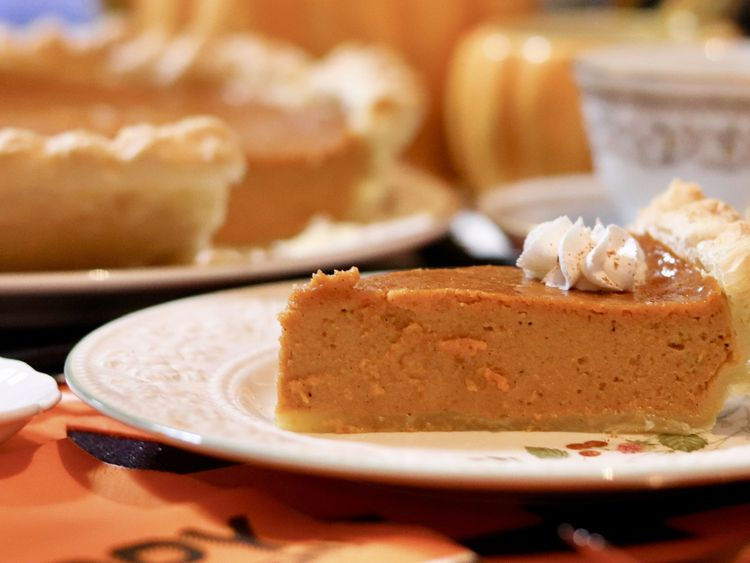

Odin Recipes
Pumpkin Pie

Cindy's Pumpkin Pie
This pumpkin pie recipe uses melted ice cream instead of evaporated milk. The result is delicious. I have never brought home leftovers of this pie. I recommend using fresh pumpkin, but canned pumpkin can also be used.
Ingredients
- 1 and a half pints of vanilla ice cream, softened
- 3 eggs
- 1 teaspoon ground cinnamon
- 2 (9 inch) unbaked pie shells
Directions
- Preheat oven to 425 degrees F (220 degrees C.) Place ice cream near the warm oven to soften.
- In a large bowl, whisk together the eggs. Stir in the pumpkin puree, sugar, salt, cinnamon, ginger, and nutmeg. Mix in soft ice cream until smooth. Pour filling into two 9 inch pie shells.
- Bake for 15 minutes in the preheated oven. Reduce temperature to 350 degrees F (175 degrees C), and bake an additional 30 to 40 minutes, or until filling is set.